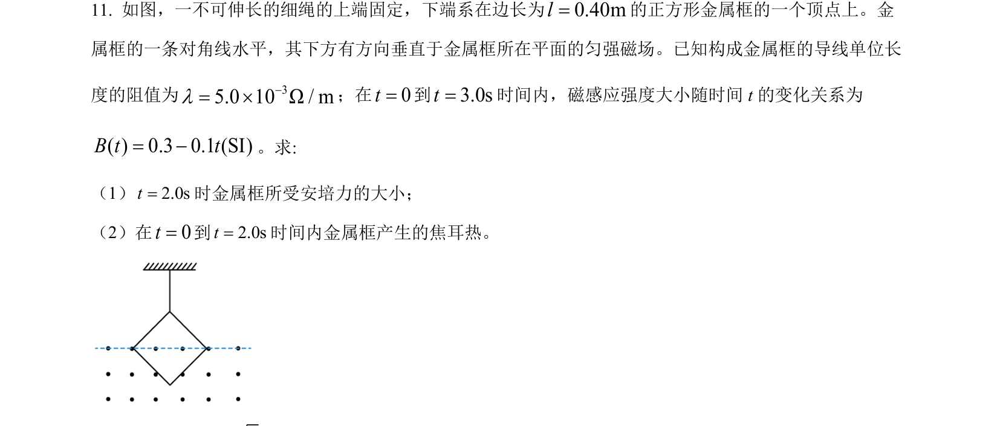
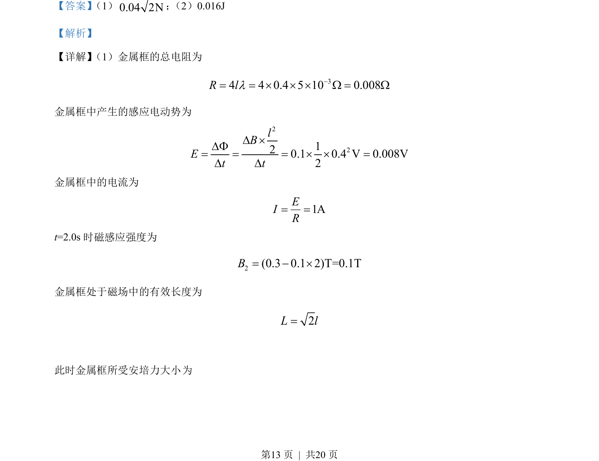
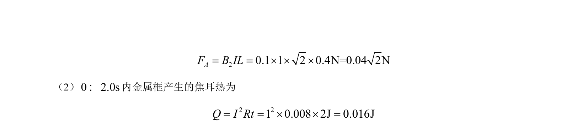

考点：电磁感应 安培力 焦耳定律 闭合电路欧姆定律

本题考查电磁感应中感应电动势、安培力和焦耳热的计算。


📄 原 PDF 第 13 页：
素材/真题/吉林/2008-2024·（吉林）物理高考真题/2022年高考物理试卷（全国乙卷）（解析卷）.pdf
【答案】 （1）0.04 2N； （2）0.016J 【解析】 【详解】 （1）金属框的总电阻为 34 4 0.4 5 10 0.008R ll-= = ´ ´ ´ W = W 金属框中产生的感应电动势为 22120.1 0.4 V 0.008V2lBEt tD ´DF= = = ´ ´ =D D 金属框中的电流为 1AEIR= = t=2.0s时磁感应强度为 2(0.3 0.1 2)T=0.1TB= - ´ 金属框处于磁场中的有效长度为 2L l= 此时金属框所受安培力大小 为